Reflective protobuffer APIs
Get Started
gRPC First
Supports gRPC servers that implement reflection. Protobuffer introspection dynamically reloads on new server deployments.
![[object Object]](/graphpb/img/rest.png)
Transcoding HTTP/JSON to gRPC
GraphPB lets you focus on API specification. REST bindings are generated directily from protobuffer descriptors with no need for more code generation.
![[object Object]](/graphpb/img/gopher.png)
Powered by Go
Written in Go. Extend or customize with starlark scripting.